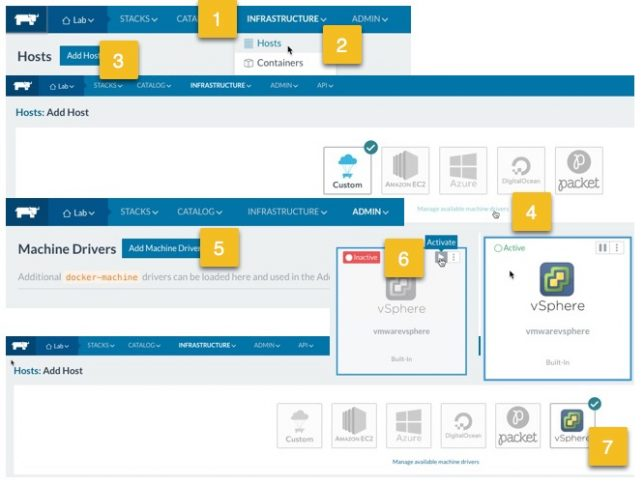
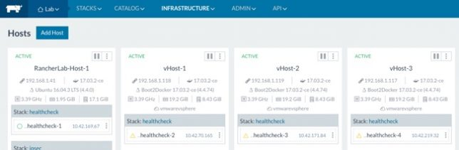
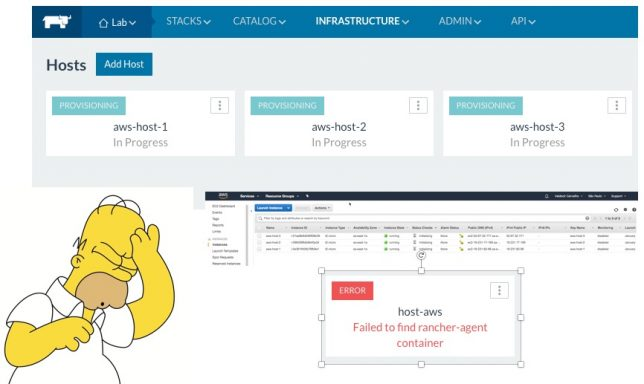

Rancher Parte 3 - Integração com VMware vSphere e Cloud Amazon AWS
Blog Homelab Tutoriais VMwareCompartilhe esse post nas redes sociais...
Olá Homelabers!
Essa é terceira e última parte da série sobre Rancher (@Rancher_Labs).
No primeiro post, mostrei como fazer a instalação e a configuração básica do Rancher.
https://twitter.com/homelaber/status/948835714954915857
No segundo post, mostrei como preparar e adicionar um host ao Rancher.
https://twitter.com/homelaber/status/950467311592509440
Hoje, vou mostrar como fazer a integração do Rancher com o VMware vSphere e com a Cloud Amazon AWS.
* Provisionar hosts no VMware vSphere
* Provisionar hosts na Cloud Amazon AWS
Provisionar hosts no VMware vSphere
Para que o Rancher possa provisionar hosts no ambiente VMware vSphere, primeiramente é necessário adicionar o Machine Drive específico para vSphere e para ativar o Machine Driver é muito simples.
Menu INFRASTRUCTURE » Hosts » Add Host » Manage Available machine drivers » Add Machine Driver e escolher vSphere.

Feito isso, o próximo passo é preencher os campos com as informações do seu servidor vSphere.
* Nome do Host
* Quantidade de Hosts
* Endereço do vCenter ou ESXi (aqui prefira utilizar hostname)
* Username e Password do vCenter - um usuário que tenha permissão de criar VMs
* Número de vCPUs, Memória e Disco do host
* URL do ISO do [boot2docker](https://github.com/boot2docker) - https://github.com/boot2docker/boot2docker/releases/download/v17.03.2-ce/boot2docker.iso (importante utilizar a mesma versão do Docker utilizada no Rancher)
* Datacenter, Pool, Host, Network e Data Store onde o Host será criado. Se você tem o vCenter no seu ambiente, não preencha nada no campo Host. Importante preencher os valores exatamente como estão no vCenter.
Após isso, basta clicar no botão Creat e aguardar o provisionamento dos host no vSphere.
Você pode acompanhar o andamento e caso seja necessário fazer algum troubleshooting através dos logs do Rancher Server.
$ docker ps -a
$ docker container logs -f <Container ID>
Após alguns minutos os Hosts estarão provisionados e ativos no Rancher

Você pode também, acompanhar a criação das VMs pelo console do vCenter.
Provisionar hosts na Cloud Amazon AWS
O processo para provisionar hosts Rancher na AWS é bem parecido com o processo para vSphere.
Caso o Machine Driver da AWS não esteja ativo, basta ativá-lo da mesma maneira a qual fizemos com o vSphere.
Menu INFRASTRUCTURE » Hosts » Add Host » Escolher AWS
Importante ressaltar que você precisa ter uma conta ativa na AWS. Não é o foco desse post a criação da conta e a operação da AWS.
Feito isso, o próximo passo é preencher os campos com as informações da AWS:
* Escolher a região - São Paulo é a sa-east-1
* Preencher o seu Access Key e Secret Key
* Escolher o Availability Zone e a VCP/Subnet
* Escolher o Security Group
* Definir as caracteristicas do host - Nome, Quantidade, Tipo de Instância, etc.
Após preencher os campos necessários, basta clicar em Create e o Rancher começará a fazer o seu trabalho de provisionar as instâncias na AWS.
Você poderá acompanhar a criação pela UI do Rancher, pelos logs e também pela console da AWS.
Aqui um ponto MUITO importante. Os hosts criados na AWS precisam se comunicar com o Rancher Server, se isso não for possível, você receberá um erro “Failed to find rancher-agent container”.

Eu uso Vivo Fibra, tentei de várias maneiras configurar um Port Forwarding mas não funcionou - aliás, se você tem Vivo Fibra e conseguiu fazer essa configuração, me ajuda ai vai!!! :)
Update: Passei mais algumas HORAS tentando fazer esse negócio funcionar e deu certo. A Vivo bloqueia a porta 8080, então eu subi o Rancher Server em uma porta diferente (9999) no caso e criei um redirecionamento de portas no meu modem. Dessa maneira, consegui fazer o provisionamento na AWS sem erros.
Comando para subir o Rancher com uma porta diferente:
docker run -d --restart=unless-stopped -p <span style="color: #ff0000;">9999</span>:8080 rancher/server:stable
Portanto, se você quiser reproduzir isso, antes de mais nada, precisa configurar o port forwarding (redirecionamento de portas) no seu modem/router (https://portforward.com/) e subir o Rancher na porta configurada.
Se você subir o Rancher Server em algum provedor de Cloud, como a AWS ou configurar a sua rede para receber conexões de fora (via Firewall, VPN ou um link Direct Connect com a AWS) você não irá enfrentar esse problema.
Fechamento e Próximos Passos
Bom, pessoal, então é isso! Encerro aqui essa série de posts sobre como montar um Lab de Rancher e espero que vocês tenham gostado e aprendido tanto como eu aprendi.
Deixo algumas dicas para quem quiser seguir adiante com os estudos sobre Rancher:
* Seguir o @Rancher_Labs no twitter
* Ler a [documentação do Rancher](http://rancher.com/docs/rancher/latest/en/)
* Acompanhar o [blog](http://rancher.com/blog/) para saber das novidades - a [versão 2.0 está em Tech Preview](https://rancher.com/rancher2-0/)
* Passear pelo [Learning Resources](http://rancher.com/learn/), onde você irá encontrar diversos artigos e vídeos com casos de uso.
* Entrar e acompanhar o Slack do Rancher - https://rancher-users.slack.com
* E por fim, testar, praticar e pensar em casos de uso para você e/ou para sua empresa. Monte um lab, comece com algumas aplicações pouco críticas, investigue e estude outros produtos e defina qual é o melhor para você.
Vídeo:
Você poderá acompanhar o passo-a-passo mais detalhado desse post no vídeo abaixo.
Deixe o seu comentário o que você achou da série. Se você conseguiu montar o seu lab, quais foram as suas dificuldades, o que eu poderia ter feito de melhor e diferente.
Até a próxima!
VC
Compartilhe esse post nas redes sociais...Valdecir Carvalho
Nerd e pai orgulhoso da Mariana e João. Profissional Sênior de TI com foco em arquitetura de infraestrutura e cloud computing. Blogueiro, podcaster, palestrante, amante de comunidades técnicas, fotógrafo aposentado e adora jogos antigos.
#vExpert · #VMUGLeader · #VUGBrasil · #vBronwBagBrasil · #VeeamVanguard